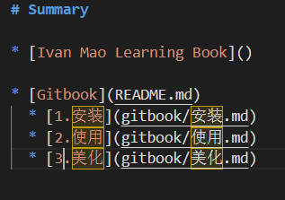

3 美化
3.1去掉“本书由Gitbook”

3.1.1 在根目录下新建styles文件夹，在里面新建website.css文件。

3.1.2 website.css文件内容如下：
.gitbook-link {
display: none !important;
}
3.1.3 在book.json中添加下面的内容。
这个 styles节点在book.json中和"plugins"平级。
"styles": {
"website": "styles/website.css"
}
3.1.4 如果没有book.json,可自行生成文件
之后生成的书就没有“本书由Gitbook”字样了。
3.2 除去列表Introduction项
将首项设为README.md
